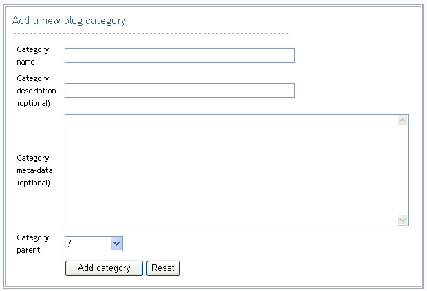

Blog Administration
|
Individuals with privileges to author blog content, maintain blog properties or settings will be given access to the Blog administration console. From the administration console, you will be able to access features for managing blog properties, adding categories, creating and editing blog entries and uploading files. |
Setting Blog Properties To manage the settings of your blog:
|
Managing Categories Blog categories define the structure and organization for blog entries and make finding information easier for end users. To add a blog category:
|

To edit a blog category:
- Click the Categories Tab within the Blog Portlet Administrative Console.
- Select the category to edit from the category name drop down under the Modify an existing blog category section.
- Click the Edit category button.
- Update Category description. (optional)
- Update Category meta-data. (optional)
- Click the Update category button.
To delete a blog category:
- Click the Categories Tab within the Blog Portlet Administrative Console.
- Select the category to delete from the category name drop down under the Delete an existing blog category section.
- Click the Delete category button.